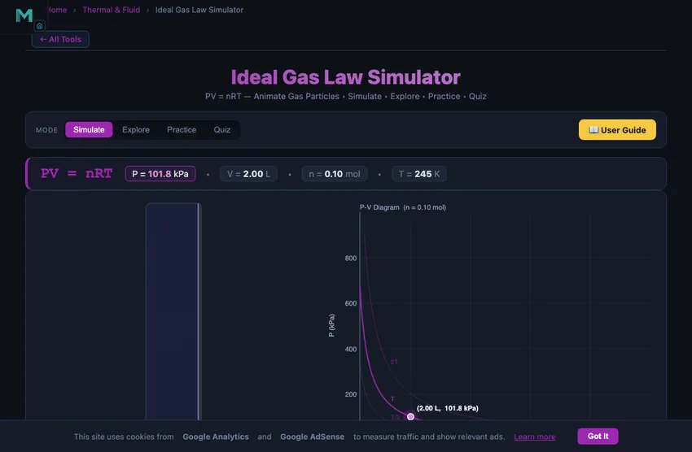

Ideal Gas Law Calculator & Simulator
PV = nRT — Animate Gas Particles • Simulate • Explore • Practice • Quiz
1 Overview
The Ideal Gas Law Simulator brings the equation PV = nRT to life with animated gas particles, real-time P-V diagrams with isotherms, and multi-variable control. This single equation unifies Boyle's Law, Charles' Law, and Gay-Lussac's Law into one framework, making it the cornerstone of gas thermodynamics. The universal gas constant R = 8.314 J/(mol·K) ties pressure (P), volume (V), moles (n), and absolute temperature (T) together.
This simulator is designed for engineering and physics students studying thermodynamics, STP conditions, combined gas law problems, and molar volume calculations. It supports four gas types (Air, Helium, CO₂, N₂) and lets you choose which variable to solve for, making it a versatile tool for understanding how the four state variables interact.
2 Configuring the System
The simulator opens in Simulate mode, solving for Pressure by default. You will see a formula banner at the top displaying the current values of P, V, n, and T. Below it, the canvas shows an animated particle container on the left and a P-V diagram with isotherms on the right. Four sliders let you adjust moles, temperature, volume, and pressure (the slider for the solved variable is hidden).
The SI / Imperial switch in the mode bar reads the same state in US units: pressure in psi, volume in cubic feet and temperature in °F (with absolute temperature in °R alongside it, since PV = nRT needs an absolute scale). The formula banner, both readout columns, the piston's V and T callouts and the P–V diagram's axes and cursor readout all follow. Amount of substance stays in moles — the mole is SI and used worldwide — and the pressure card keeps its atm cross-reference in both systems.
Start by experimenting with the Solve For selector. Choose Pressure P to see how pressure changes when you slide volume or temperature. Switch to Volume V to model an expanding balloon. Choose Temperature T to calculate the temperature needed for a given pressure and volume. Select Moles n to find how much gas is present. The formula banner highlights the solved variable, and the P-V diagram updates in real time with isotherms at T/2, T, and 2T.
3 Running the Cycle
In Simulate mode, the left canvas panel renders an idealised gas container with animated molecules. Particle speed scales with the square root of temperature, so cooling makes them sluggish and blue while heating makes them fast and orange-red. Particle density scales with n/V, so adding moles or reducing volume visibly packs more molecules in.
The right panel plots the P-V diagram with three isothermal curves. The current state appears as a glowing dot that moves along the appropriate isotherm as you adjust sliders. Use the Gas selector (Air, Helium, CO₂, N₂) to change the particle visualisation. Try setting n = 1 mol, T = 273 K, and solving for V to find the molar volume at STP conditions (approximately 22.4 L at 101.3 kPa). This classic result directly connects the ideal gas law to real-world gas behaviour under standard conditions.
4 The Underlying Theory
Switch to Explore mode to browse curated concept cards across four categories: Gas Laws, Ideal Gas Equation, Combined Gas Law, and Applications. Each card presents a focused topic with explanations, formulas, and examples.
The Gas Laws category covers Boyle's Law (PV = constant at fixed T and n), Charles' Law (V ∝ T at fixed P and n), and Gay-Lussac's Law (P ∝ T at fixed V and n). The Ideal Gas Equation category explains the universal gas constant, molar volume, and STP conditions. The Combined Gas Law category shows how to handle problems where temperature, pressure, and volume all change simultaneously. The Applications category covers practical uses like tyre inflation, scuba tanks, and atmospheric pressure calculations.
5 Try a Problem
Practice mode generates randomised ideal gas law problems. Click New Problem to receive a scenario involving PV = nRT. Enter your numerical answer and click Check for instant feedback. If you need help, Show Solution reveals the step-by-step working. Problems span all three sub-laws and the full combined equation, including conversions between units (kPa, atm, L, mL, K, °C). Your score is tracked continuously.
Quiz mode presents five questions per session with multiple-choice and numerical formats. Questions test both conceptual understanding (e.g., which variable increases when you add moles at constant T and V?) and calculation skills. After completing the quiz, review your results and identify any weak areas. This mode is excellent preparation for thermodynamics examinations where PV = nRT calculations are heavily tested.
6 Engineering Notes
- Use the Solve For selector strategically. If a problem gives you P, n, and T and asks for V, switch to “Volume V” and adjust sliders to match the given values — the answer appears instantly.
- Remember that R = 8.314 J/(mol·K) when pressure is in pascals and volume in cubic metres. When using kPa and litres, R = 8.314 L·kPa/(mol·K) gives the same result numerically.
- Watch the isotherms on the P-V diagram. The higher the temperature, the further the isotherm sits from the origin — this shows that at the same pressure, a hotter gas occupies more volume.
- The particle animation colour shifts from blue (cold) to orange-red (hot), providing an intuitive sense of molecular kinetic energy without needing to read numbers.
- Try the classic STP check: set n = 1, T = 273 K, solve for V at P = 101.3 kPa. You should get approximately 22.4 L — the standard molar volume.
- Combine with the Boyle's Law Simulator and Charles' Law Simulator to study each sub-law individually before tackling the combined gas law problems in Practice mode.
How to Use the Ideal Gas Law Simulator — PV = nRT

The Ideal Gas Law (PV = nRT) is the fundamental equation of gas thermodynamics, unifying pressure, volume, temperature, and the amount of substance into one elegant relationship. This free interactive simulator lets you adjust any three of the four variables and instantly observe how the fourth changes — all while watching animated gas particles respond in real time. Whether you are studying Boyle’s Law, Charles’ Law, or the combined gas law, this tool makes the underlying physics visible and intuitive.
Understanding PV = nRT — The Four Variables
In the ideal gas law, P is absolute pressure in kilopascals, V is volume in litres, n is the number of moles of gas, and T is absolute temperature in Kelvin. The universal gas constant R = 8.314 J/(mol·K) ties them together. The simulator uses the "Solve For" selector to pick which variable is computed: choose Pressure P to see how pressure changes when you slide volume or temperature; choose Volume V to model an expanding balloon or piston; choose Temperature T to calculate the temperature needed for a given pressure.
From Boyle’s to Gay-Lussac’s — Three Laws in One
The ideal gas law subsumes all three classical gas laws. Boyle’s Law (PV = constant at fixed T and n) describes a syringe or tyre compression. Charles’ Law (V ∝ T at fixed P and n) explains why a balloon rises when heated. Gay-Lussac’s Law (P ∝ T at fixed V and n) governs sealed pressure cookers. In the Explore mode, each law has its own concept card with formula, diagram, and a worked example. In the Practice mode, problems are randomly generated across all three scenarios so you build fluency in the whole equation.
What the Particle Animation Shows
The canvas on the left shows an idealised gas container with animated molecules. Particle speed scales with √T following the Maxwell-Boltzmann distribution, so cooling the gas makes particles sluggish and blue while heating makes them fast and orange-red. Density inside the container scales with n/V, so adding moles or shrinking the volume visibly packs more molecules in. The right panel plots the P–V diagram with isothermal hyperbolas at T/2, T, and 2T, with the current state shown as a glowing dot that moves along the appropriate curve as you adjust sliders.
The Car Tyre Worked Example — Why Your Pressure Climbs in Summer
Every workshop apprentice meets this calculation eventually. A car tyre is inflated to 220 kPa gauge (so 320 kPa absolute) on a cool spring morning at 15 °C (288 K). By mid-afternoon under direct sun the tyre is at 50 °C (323 K). The volume stays roughly constant (the tyre walls are stiff). What does the pressure read?
| Step | Working | Result |
|---|---|---|
| Use Gay-Lussac form: P/T = constant | P2 = P1 × (T2/T1) | — |
| Plug in absolute values | P2 = 320 × (323/288) | P2 = 359 kPa absolute |
| Convert back to gauge | 359 − 100 | 259 kPa gauge (~37.5 psi) |
| Pressure rise | 259 − 220 | +39 kPa (~5.7 psi) |
About 6 psi rise on a hot afternoon, with the same air in the same tyre. Manufacturers specify cold inflation pressure precisely because this varies so much. The simulator lets you reproduce this case by setting the “Constant V” option and stepping temperature from 288 to 323 K.
Where Real Gases Stop Being Ideal
The ideal gas law assumes two things: molecules occupy zero volume, and they don’t attract each other. Both are wrong, just usually wrong by amounts small enough to ignore. There are three regimes where the cracks show:
- High pressure (~50+ bar). Molecules start spending a noticeable fraction of the container volume actually being molecules. The corrected van der Waals equation (P + an²/V²)(V − nb) = nRT compensates for this. A scuba tank at 200 bar deviates from ideal behaviour by about 3 % in pressure.
- Low temperature (near the boiling point). Intermolecular attractions stop being negligible compared to the kinetic energy. Steam below 150 °C, methane below −160 °C — both need real-gas tables (NIST, Cengel) for accurate work.
- Mixtures of gases with very different molecules. Each component obeys the ideal gas law for itself (Dalton’s law of partial pressures), but if one is near its dew point, condensation effects break the assumption. HVAC moist-air calculations use psychrometric charts for this reason rather than the bare PV = nRT.
The Three Sub-Laws That Live Inside PV = nRT
If you hold any two of the four variables constant, PV = nRT collapses to one of the historical gas laws. They are worth memorising in their named form:
- Boyle (1662) — constant T, n: PV = constant. Squeeze a syringe and the pressure rises. The first quantitative gas relationship known to chemistry.
- Charles (1787) — constant P, n: V/T = constant. Heat a balloon and it expands. Charles never published his result; Gay-Lussac credited him in 1802.
- Gay-Lussac (1809) — constant V, n: P/T = constant. This is the tyre example above. Most pressure-cooker accidents are versions of this law misapplied.
- Avogadro (1811) — constant P, T: V/n = constant. At STP, one mole of any gas occupies 22.4 L, regardless of what gas it is.
Run each as a preset in the simulator. With three variables held, the fourth traces out the appropriate proportionality on the P-V chart.
Ideal Gas Law — Forms & Constants
| Form | Equation | R Value |
|---|---|---|
| Standard (moles) | PV = nRT | 8.314 J/(mol·K) |
| Per unit mass | PV = mRsT | Rs = R/M (specific gas constant) |
| Density form | P = ρRsT | Air: Rs = 287 J/(kg·K) |
| Combined Gas Law | P1V1/T1 = P2V2/T2 | Constant n |
Standard Conditions & Gas Properties
| Gas | Molar Mass (g/mol) | Rs (J/kg·K) | γ (Cp/Cv) |
|---|---|---|---|
| Air | 28.97 | 287 | 1.40 |
| Nitrogen (N2) | 28.01 | 297 | 1.40 |
| Oxygen (O2) | 32.00 | 260 | 1.40 |
| Carbon Dioxide (CO2) | 44.01 | 189 | 1.29 |
| Helium (He) | 4.00 | 2 077 | 1.67 |
| Hydrogen (H2) | 2.02 | 4 124 | 1.41 |
| Methane (CH4) | 16.04 | 518 | 1.31 |
STP (Standard Temperature and Pressure): T = 273.15 K (0 °C), P = 101.325 kPa. At STP, 1 mole of any ideal gas occupies 22.414 litres.
Explore Related Simulators
To deepen your understanding of gas laws, explore our Boyle’s Law Simulator for PV isotherms, the Charles’ Law Simulator for isobaric expansion and absolute zero, the Specific Heat Capacity Simulator comparing Q = mcΔT across materials, the Thermodynamics Cycles Simulator covering Carnot, Otto, and Diesel cycles, and the Rankine Cycle Simulator for steam power plants.